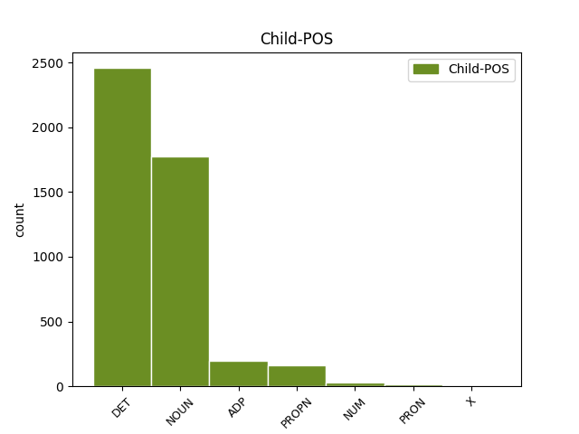

Distribution of features within this leaf

Agreement Rules sorted by frequency.
- When the dependent token is the determiner(det) of the head token, and the dependent token is DET.
1 Під _ _ _ _ 0 _ _ _
2 час _ _ _ _ 0 _ _ _
3 показу _ _ _ _ 0 _ _ _
4 у _ _ _ _ 0 _ _ _
5 США _ _ _ _ 0 _ _ _
6 , _ _ _ _ 0 _ _ _
7 що _ _ _ _ 0 _ _ _
8 розпочався _ _ _ _ 0 _ _ _
9 18 _ _ _ _ 0 _ _ _
10 вересня _ _ _ _ 0 _ _ _
11 2015 _ _ _ _ 0 _ _ _
12 року _ _ _ _ 0 _ _ _
13 , _ _ _ _ 0 _ _ _
14 протягом _ _ _ _ 0 _ _ _
15 першого _ _ _ _ 0 _ _ _
16 тижня _ _ _ _ 0 _ _ _
17 фільм _ _ _ _ 0 _ _ _
18 був _ _ _ _ 0 _ _ _
19 показаний _ _ _ _ 0 _ _ _
20 у _ _ _ _ 0 _ _ _
21 545 _ _ _ _ 0 _ _ _
22 кінотеатрах _ _ _ _ 0 _ _ _
23 і _ _ _ _ 0 _ _ _
24 зібрав _ _ _ _ 0 _ _ _
25 7 222 035 _ _ _ _ 0 _ _ _
26 $ _ _ _ _ 0 _ _ _
27 , _ _ _ _ 0 _ _ _
28 що _ _ _ _ 0 _ _ _
29 на _ _ _ _ 0 _ _ _
30 той _ _ _ _ 0 _ _ _
31 час _ _ _ _ 0 _ _ _
32 дозволило _ _ _ _ 0 _ _ _
33 йому _ _ _ _ 0 _ _ _
34 зайняти _ _ _ _ 0 _ _ _
35 5 _ _ _ _ 0 _ _ _
36 місце _ _ _ _ 0 _ _ _
37 серед _ _ _ _ 0 _ _ _
38 усіх увесь DET Pg----pga Case=Gen|Number=Plur|PronType=Tot 39 det _ Id=39rn|LTranslit=uveś|Translit=usich
39 прем'єр прем’єра NOUN Ncfpgn Animacy=Inan|Case=Gen|Gender=Fem|Number=Plur 0 _ _ _
40 . _ _ _ _ 0 _ _ _
1 У _ _ _ _ 0 _ _ _
2 1-му _ _ _ _ 0 _ _ _
3 кварталі _ _ _ _ 0 _ _ _
4 2015 _ _ _ _ 0 _ _ _
5 р _ _ _ _ 0 _ _ _
6 . _ _ _ _ 0 _ _ _
7 підприємством _ _ _ _ 0 _ _ _
8 сплачено _ _ _ _ 0 _ _ _
9 понад _ _ _ _ 0 _ _ _
10 3 _ _ _ _ 0 _ _ _
11 млрд _ _ _ _ 0 _ _ _
12 . _ _ _ _ 0 _ _ _
13 ₴ _ _ _ _ 0 _ _ _
14 податків податок NOUN Ncmpgn Animacy=Inan|Case=Gen|Gender=Masc|Number=Plur 0 _ _ _
15 і _ _ _ _ 0 _ _ _
16 зборів збір NOUN Ncmpgn Animacy=Inan|Case=Gen|Gender=Masc|Number=Plur 14 conj _ Id=39ka|LTranslit=zbir|SpaceAfter=No|Translit=zboriv
17 . _ _ _ _ 0 _ _ _
1 Особливі _ _ _ _ 0 _ _ _
2 слова _ _ _ _ 0 _ _ _
3 подяки _ _ _ _ 0 _ _ _
4 релігійним _ _ _ _ 0 _ _ _
5 громадам _ _ _ _ 0 _ _ _
6 м _ _ _ _ 0 _ _ _
7 . _ _ _ _ 0 _ _ _
8 Кіцмань _ _ _ _ 0 _ _ _
9 та _ _ _ _ 0 _ _ _
10 с _ _ _ _ 0 _ _ _
11 . _ _ _ _ 0 _ _ _
12 Мамаївці _ _ _ _ 0 _ _ _
13 та _ _ _ _ 0 _ _ _
14 їхнім _ _ _ _ 0 _ _ _
15 настоятелям _ _ _ _ 0 _ _ _
16 - _ _ _ _ 0 _ _ _
17 отцям _ _ _ _ 0 _ _ _
18 Юрію Юрій PROPN Npmsdy Animacy=Anim|Case=Dat|Gender=Masc|NameType=Giv|Number=Sing 0 _ _ _
19 ( _ _ _ _ 0 _ _ _
20 Кав'юку _ _ _ _ 0 _ _ _
21 ) _ _ _ _ 0 _ _ _
22 та _ _ _ _ 0 _ _ _
23 Івану Іван PROPN Npmsdy Animacy=Anim|Case=Dat|Gender=Masc|NameType=Giv|Number=Sing 18 conj _ Id=39f4|LTranslit=Ivan|Translit=Ivanu
24 ( _ _ _ _ 0 _ _ _
25 Марковському _ _ _ _ 0 _ _ _
26 ) _ _ _ _ 0 _ _ _
27 , _ _ _ _ 0 _ _ _
28 без _ _ _ _ 0 _ _ _
29 яких _ _ _ _ 0 _ _ _
30 ця _ _ _ _ 0 _ _ _
31 поїздка _ _ _ _ 0 _ _ _
32 була _ _ _ _ 0 _ _ _
33 б _ _ _ _ 0 _ _ _
34 просто _ _ _ _ 0 _ _ _
35 неможливою _ _ _ _ 0 _ _ _
36 . _ _ _ _ 0 _ _ _
1 Благородна _ _ _ _ 0 _ _ _
2 і _ _ _ _ 0 _ _ _
3 в _ _ _ _ 0 _ _ _
4 стрімкому _ _ _ _ 0 _ _ _
5 вихорі _ _ _ _ 0 _ _ _
6 - _ _ _ _ 0 _ _ _
7 льоті _ _ _ _ 0 _ _ _
8 , _ _ _ _ 0 _ _ _
9 коли _ _ _ _ 0 _ _ _
10 , _ _ _ _ 0 _ _ _
11 налякана _ _ _ _ 0 _ _ _
12 , _ _ _ _ 0 _ _ _
13 не _ _ _ _ 0 _ _ _
14 біжить _ _ _ _ 0 _ _ _
15 , _ _ _ _ 0 _ _ _
16 а _ _ _ _ 0 _ _ _
17 стелеться _ _ _ _ 0 _ _ _
18 над над ADP Spsi Case=Ins 0 _ _ _
19 чагарником _ _ _ _ 0 _ _ _
20 , _ _ _ _ 0 _ _ _
21 над над ADP Spsi Case=Ins 18 conj _ Id=32xn|LTranslit=nad|Translit=nad
22 кущами _ _ _ _ 0 _ _ _
23 , _ _ _ _ 0 _ _ _
24 чи _ _ _ _ 0 _ _ _
25 поміж _ _ _ _ 0 _ _ _
26 дубо _ _ _ _ 0 _ _ _
27 - _ _ _ _ 0 _ _ _
28 клено _ _ _ _ 0 _ _ _
29 - _ _ _ _ 0 _ _ _
30 ясенових _ _ _ _ 0 _ _ _
31 стовбурів _ _ _ _ 0 _ _ _
32 ... _ _ _ _ 0 _ _ _
1 Тисячі _ _ _ _ 0 _ _ _
2 таких _ _ _ _ 0 _ _ _
3 людей _ _ _ _ 0 _ _ _
4 як _ _ _ _ 0 _ _ _
5 ви _ _ _ _ 0 _ _ _
6 допомагають _ _ _ _ 0 _ _ _
7 нам _ _ _ _ 0 _ _ _
8 встати _ _ _ _ 0 _ _ _
9 на _ _ _ _ 0 _ _ _
10 захист _ _ _ _ 0 _ _ _
11 Інтернету _ _ _ _ 0 _ _ _
12 , _ _ _ _ 0 _ _ _
13 доступного _ _ _ _ 0 _ _ _
14 для _ _ _ _ 0 _ _ _
15 всіх весь DET Pg----pga Case=Gen|Number=Plur|PronType=Tot 0 _ _ _
16 і _ _ _ _ 0 _ _ _
17 кожного кожний DET Pg--m-sga Case=Gen|Gender=Masc|Number=Sing|PronType=Tot 15 conj _ Id=342c|LTranslit=kožnyj|SpaceAfter=No|Translit=kožnoho
18 . _ _ _ _ 0 _ _ _
1 Таким _ _ _ _ 0 _ _ _
2 є _ _ _ _ 0 _ _ _
3 запит _ _ _ _ 0 _ _ _
4 на _ _ _ _ 0 _ _ _
5 ознайомлення _ _ _ _ 0 _ _ _
6 з _ _ _ _ 0 _ _ _
7 містобудівними _ _ _ _ 0 _ _ _
8 умовами _ _ _ _ 0 _ _ _
9 і _ _ _ _ 0 _ _ _
10 обмеженнями _ _ _ _ 0 _ _ _
11 , _ _ _ _ 0 _ _ _
12 що _ _ _ _ 0 _ _ _
13 надавалися _ _ _ _ 0 _ _ _
14 вже _ _ _ _ 0 _ _ _
15 на _ _ _ _ 0 _ _ _
16 збудовані _ _ _ _ 0 _ _ _
17 об’єкти _ _ _ _ 0 _ _ _
18 — _ _ _ _ 0 _ _ _
19 багатоповерхівки _ _ _ _ 0 _ _ _
20 по _ _ _ _ 0 _ _ _
21 вул _ _ _ _ 0 _ _ _
22 . _ _ _ _ 0 _ _ _
23 Чорновола _ _ _ _ 0 _ _ _
24 9 _ _ _ _ 0 _ _ _
25 , _ _ _ _ 0 _ _ _
26 11 11 NUM Mlc-n Case=Nom|NumType=Card|Uninflect=Yes 0 _ _ _
27 , _ _ _ _ 0 _ _ _
28 15 15 NUM Mlc-n Case=Nom|NumType=Card|Uninflect=Yes 26 conj _ Id=2qcr|LTranslit=15|SpaceAfter=No|Translit=15
29 ; _ _ _ _ 0 _ _ _
30 торгові _ _ _ _ 0 _ _ _
31 комплекси _ _ _ _ 0 _ _ _
32 « _ _ _ _ 0 _ _ _
33 Олді _ _ _ _ 0 _ _ _
34 » _ _ _ _ 0 _ _ _
35 , _ _ _ _ 0 _ _ _
36 « _ _ _ _ 0 _ _ _
37 Епіцентр _ _ _ _ 0 _ _ _
38 » _ _ _ _ 0 _ _ _
39 , _ _ _ _ 0 _ _ _
40 « _ _ _ _ 0 _ _ _
41 Новус _ _ _ _ 0 _ _ _
42 » _ _ _ _ 0 _ _ _
43 та _ _ _ _ 0 _ _ _
44 ті _ _ _ _ 0 _ _ _
45 , _ _ _ _ 0 _ _ _
46 що _ _ _ _ 0 _ _ _
47 зводяться _ _ _ _ 0 _ _ _
48 по _ _ _ _ 0 _ _ _
49 вул _ _ _ _ 0 _ _ _
50 . _ _ _ _ 0 _ _ _
51 Київській _ _ _ _ 0 _ _ _
52 . _ _ _ _ 0 _ _ _
1 Не _ _ _ _ 0 _ _ _
2 « _ _ _ _ 0 _ _ _
3 престижність _ _ _ _ 0 _ _ _
4 » _ _ _ _ 0 _ _ _
5 школи _ _ _ _ 0 _ _ _
6 , _ _ _ _ 0 _ _ _
7 яку _ _ _ _ 0 _ _ _
8 ви _ _ _ _ 0 _ _ _
9 закінчили _ _ _ _ 0 _ _ _
10 , _ _ _ _ 0 _ _ _
11 не _ _ _ _ 0 _ _ _
12 середній _ _ _ _ 0 _ _ _
13 бал _ _ _ _ 0 _ _ _
14 ЗНО _ _ _ _ 0 _ _ _
15 у _ _ _ _ 0 _ _ _
16 вашому _ _ _ _ 0 _ _ _
17 класі _ _ _ _ 0 _ _ _
18 і _ _ _ _ 0 _ _ _
19 навіть _ _ _ _ 0 _ _ _
20 не _ _ _ _ 0 _ _ _
21 те те PRON Pd--nnsnn Animacy=Inan|Case=Nom|Gender=Neut|Number=Sing|PronType=Dem 0 _ _ _
22 , _ _ _ _ 0 _ _ _
23 в _ _ _ _ 0 _ _ _
24 якому _ _ _ _ 0 _ _ _
25 році _ _ _ _ 0 _ _ _
26 у _ _ _ _ 0 _ _ _
27 вас _ _ _ _ 0 _ _ _
28 вдома _ _ _ _ 0 _ _ _
29 з’явився _ _ _ _ 0 _ _ _
30 інтернет _ _ _ _ 0 _ _ _
31 , _ _ _ _ 0 _ _ _
32 має _ _ _ _ 0 _ _ _
33 найбільше _ _ _ _ 0 _ _ _
34 значення _ _ _ _ 0 _ _ _
35 , _ _ _ _ 0 _ _ _
36 а _ _ _ _ 0 _ _ _
37 те те PRON Pd--nnsnn Animacy=Inan|Case=Nom|Gender=Neut|Number=Sing|PronType=Dem 21 conj _ Id=2iyr|LTranslit=te|SpaceAfter=No|Translit=te
38 , _ _ _ _ 0 _ _ _
39 як _ _ _ _ 0 _ _ _
40 ви _ _ _ _ 0 _ _ _
41 проявите _ _ _ _ 0 _ _ _
42 себе _ _ _ _ 0 _ _ _
43 протягом _ _ _ _ 0 _ _ _
44 навчальних _ _ _ _ 0 _ _ _
45 і _ _ _ _ 0 _ _ _
46 не _ _ _ _ 0 _ _ _
47 лише _ _ _ _ 0 _ _ _
48 навчальних _ _ _ _ 0 _ _ _
49 активностей _ _ _ _ 0 _ _ _
50 – _ _ _ _ 0 _ _ _
51 а _ _ _ _ 0 _ _ _
52 це _ _ _ _ 0 _ _ _
53 вже _ _ _ _ 0 _ _ _
54 залежить _ _ _ _ 0 _ _ _
55 тільки _ _ _ _ 0 _ _ _
56 від _ _ _ _ 0 _ _ _
57 вас _ _ _ _ 0 _ _ _
58 і _ _ _ _ 0 _ _ _
59 ні _ _ _ _ 0 _ _ _
60 від _ _ _ _ 0 _ _ _
61 чого _ _ _ _ 0 _ _ _
62 іншого _ _ _ _ 0 _ _ _
63 . _ _ _ _ 0 _ _ _
1 Так _ _ _ _ 0 _ _ _
2 само _ _ _ _ 0 _ _ _
3 універсальними _ _ _ _ 0 _ _ _
4 були _ _ _ _ 0 _ _ _
5 означення _ _ _ _ 0 _ _ _
6 міст _ _ _ _ 0 _ _ _
7 — _ _ _ _ 0 _ _ _
8 город _ _ _ _ 0 _ _ _
9 дождєй _ _ _ _ 0 _ _ _
10 , _ _ _ _ 0 _ _ _
11 блядєй блядєй X X Animacy=Anim|Case=Gen|Foreign=Yes|Gender=Fem|Number=Plur 0 _ _ _
12 і _ _ _ _ 0 _ _ _
13 воєнських _ _ _ _ 0 _ _ _
14 частєй частєй X X Animacy=Inan|Case=Gen|Foreign=Yes|Gender=Fem|Number=Plur 11 conj _ Id=0w7m|LTranslit=časťеj|SpaceAfter=No|Translit=časťеj
15 . _ _ _ _ 0 _ _ _
Disagree Examples:
1 Андрій _ _ _ _ 0 _ _ _
2 сів _ _ _ _ 0 _ _ _
3 на _ _ _ _ 0 _ _ _
4 середину _ _ _ _ 0 _ _ _
5 , _ _ _ _ 0 _ _ _
6 знаючи _ _ _ _ 0 _ _ _
7 , _ _ _ _ 0 _ _ _
8 що _ _ _ _ 0 _ _ _
9 людина _ _ _ _ 0 _ _ _
10 з _ _ _ _ 0 _ _ _
11 волі _ _ _ _ 0 _ _ _
12 для _ _ _ _ 0 _ _ _
13 ув’язнених _ _ _ _ 0 _ _ _
14 колосальний _ _ _ _ 0 _ _ _
15 клад _ _ _ _ 0 _ _ _
16 , _ _ _ _ 0 _ _ _
17 і _ _ _ _ 0 _ _ _
18 готовий _ _ _ _ 0 _ _ _
19 зробити _ _ _ _ 0 _ _ _
20 цим _ _ _ _ 0 _ _ _
21 людям _ _ _ _ 0 _ _ _
22 все весь DET Pg--n-saa Case=Acc|Gender=Neut|Number=Sing|PronType=Tot 28 det _ Id=02eu|LTranslit=veś|SpaceAfter=No|Translit=vse
23 , _ _ _ _ 0 _ _ _
24 що _ _ _ _ 0 _ _ _
25 в _ _ _ _ 0 _ _ _
26 силі _ _ _ _ 0 _ _ _
27 , _ _ _ _ 0 _ _ _
28 приємного приємне NOUN Ao-nsgf Animacy=Inan|Case=Gen|Gender=Neut|Number=Sing 0 _ _ _
29 . _ _ _ _ 0 _ _ _
1 Квартира _ _ _ _ 0 _ _ _
2 знаходилася _ _ _ _ 0 _ _ _
3 на _ _ _ _ 0 _ _ _
4 сьомому _ _ _ _ 0 _ _ _
5 поверсі _ _ _ _ 0 _ _ _
6 , _ _ _ _ 0 _ _ _
7 і _ _ _ _ 0 _ _ _
8 Вінстон _ _ _ _ 0 _ _ _
9 , _ _ _ _ 0 _ _ _
10 який _ _ _ _ 0 _ _ _
11 мав _ _ _ _ 0 _ _ _
12 тридцять _ _ _ _ 0 _ _ _
13 дев’ять _ _ _ _ 0 _ _ _
14 років рік NOUN Ncmpgn Animacy=Inan|Case=Gen|Gender=Masc|Number=Plur 0 _ _ _
15 та _ _ _ _ 0 _ _ _
16 варикозну _ _ _ _ 0 _ _ _
17 виразку виразка NOUN Ncfsan Animacy=Inan|Case=Acc|Gender=Fem|Number=Sing 14 conj _ Id=03j2|LTranslit=vyrazka|Translit=vyrazku
18 на _ _ _ _ 0 _ _ _
19 правій _ _ _ _ 0 _ _ _
20 щиколотці _ _ _ _ 0 _ _ _
21 , _ _ _ _ 0 _ _ _
22 йшов _ _ _ _ 0 _ _ _
23 дуже _ _ _ _ 0 _ _ _
24 повільно _ _ _ _ 0 _ _ _
25 , _ _ _ _ 0 _ _ _
26 відпочиваючи _ _ _ _ 0 _ _ _
27 по _ _ _ _ 0 _ _ _
28 декілька _ _ _ _ 0 _ _ _
29 разів _ _ _ _ 0 _ _ _
30 під _ _ _ _ 0 _ _ _
31 час _ _ _ _ 0 _ _ _
32 сходження _ _ _ _ 0 _ _ _
33 . _ _ _ _ 0 _ _ _
1 З _ _ _ _ 0 _ _ _
2 шухляди _ _ _ _ 0 _ _ _
3 столу _ _ _ _ 0 _ _ _
4 він _ _ _ _ 0 _ _ _
5 дістав _ _ _ _ 0 _ _ _
6 ручку _ _ _ _ 0 _ _ _
7 для _ _ _ _ 0 _ _ _
8 пера _ _ _ _ 0 _ _ _
9 , _ _ _ _ 0 _ _ _
10 пляшечку _ _ _ _ 0 _ _ _
11 чорнил _ _ _ _ 0 _ _ _
12 , _ _ _ _ 0 _ _ _
13 і _ _ _ _ 0 _ _ _
14 товстий товстий ADJ Afpmsafn Animacy=Inan|Case=Acc|Degree=Pos|Gender=Masc|Number=Sing 0 _ _ _
15 , _ _ _ _ 0 _ _ _
16 розміром розмір NOUN Ncmsin Animacy=Inan|Case=Ins|Gender=Masc|Number=Sing 14 conj _ Id=04lj|LTranslit=rozmir|Translit=rozmirom
17 з _ _ _ _ 0 _ _ _
18 чверть _ _ _ _ 0 _ _ _
19 стандартного _ _ _ _ 0 _ _ _
20 листа _ _ _ _ 0 _ _ _
21 , _ _ _ _ 0 _ _ _
22 записник _ _ _ _ 0 _ _ _
23 з _ _ _ _ 0 _ _ _
24 червоним _ _ _ _ 0 _ _ _
25 задником _ _ _ _ 0 _ _ _
26 та _ _ _ _ 0 _ _ _
27 мармуровою _ _ _ _ 0 _ _ _
28 обкладинкою _ _ _ _ 0 _ _ _
29 . _ _ _ _ 0 _ _ _
1 Маленькими _ _ _ _ 0 _ _ _
2 незграбними _ _ _ _ 0 _ _ _
3 літерами _ _ _ _ 0 _ _ _
4 він _ _ _ _ 0 _ _ _
5 написав _ _ _ _ 0 _ _ _
6 : _ _ _ _ 0 _ _ _
7 4-те _ _ _ _ 0 _ _ _
8 квітня квітень NOUN Ncmsgn Animacy=Inan|Case=Gen|Gender=Masc|Number=Sing 0 _ _ _
9 , _ _ _ _ 0 _ _ _
10 1984 1984 NUM Mlc-n Case=Nom|NumType=Card|Uninflect=Yes 8 conj _ Id=051d|LTranslit=1984|SpaceAfter=No|Translit=1984
11 . _ _ _ _ 0 _ _ _
1 Вона _ _ _ _ 0 _ _ _
2 була _ _ _ _ 0 _ _ _
3 зухвала _ _ _ _ 0 _ _ _
4 на _ _ _ _ 0 _ _ _
5 вигляд _ _ _ _ 0 _ _ _
6 дівчина _ _ _ _ 0 _ _ _
7 , _ _ _ _ 0 _ _ _
8 десь _ _ _ _ 0 _ _ _
9 приблизно _ _ _ _ 0 _ _ _
10 двадцяти _ _ _ _ 0 _ _ _
11 семи _ _ _ _ 0 _ _ _
12 років рік NOUN Ncmpgn Animacy=Inan|Case=Gen|Gender=Masc|Number=Plur 0 _ _ _
13 , _ _ _ _ 0 _ _ _
14 з з ADP Spsi Case=Ins 12 conj _ Id=05tq|LTranslit=z|Translit=z
15 густим _ _ _ _ 0 _ _ _
16 волоссям _ _ _ _ 0 _ _ _
17 , _ _ _ _ 0 _ _ _
18 обличчям _ _ _ _ 0 _ _ _
19 вкритим _ _ _ _ 0 _ _ _
20 ластовинням _ _ _ _ 0 _ _ _
21 , _ _ _ _ 0 _ _ _
22 і _ _ _ _ 0 _ _ _
23 швидкими _ _ _ _ 0 _ _ _
24 атлетичними _ _ _ _ 0 _ _ _
25 рухами _ _ _ _ 0 _ _ _
26 . _ _ _ _ 0 _ _ _